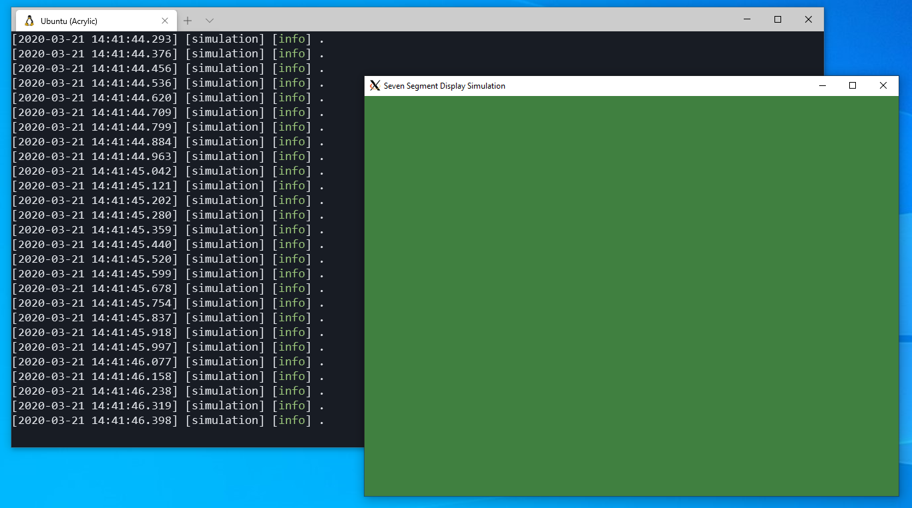

FPGA Design for Software Engineers, Part 2 - Simulation and Build Tools
Jeff DeWall 13 min read March 21, 2020 #FPGAIt's been a while since the last article, but it was well received so thanks to everyone for the great feedback!
This time we'll take a quick break from learning Verilog to set up a better simulation environment and build process using Cmake and Conan.
The next article, which is already basically written, will be back to hardware design, using seven segment displays.
Article Series
- Verilog and State Machines
- Simulation and Build Tools
- Seven Segment Displays
- Docker Builds
- Build System Updates, ECP5 Support
- Time-Multiplexed Seven Segment Displays
Updates Feb 23, 2021
As mentioned at the end of this article, I've moved the main repository over to GitHub, so the article has been updated with links to that repo. I've also switched from tags to branches so that things like the new Docker build system from this article can be added more easily. The branches follow the format post_N so this post's branch is post_2.
Given the Docker build system is much easier to use, I recommend doing that instead of all the details spelled out here, which are abstracted away if you do that.
Back to the Original Article
In the last article I recommended some free books you can find online for learning electronics. SuhcoR recommended some other great books in the comments on programming.reddit that I can also echo if you're willing to invest in the hobby a bit:
Practical Electronics for Inventors
Introduction to Logic Circuits & Logic Design with Verilog
Following the code
You can check out the repository on GitHub to follow along. I have branches that correspond to each article, so that as we proceed on there's not too much noise in the repo as you try to follow each new development.
The branches are setup as post_N. For the previous article you can checkout post_1 and for this article, post_2 is the tag to checkout.
Or you can just checkout the dev branch to see the latest stuff I'm playing around with. {{< emoji "😄" >}}
Updating our Project Workflow
Before we get to more FPGA related portions in the next article, we're going to go down the rabbit hole a bit on setting up a cross-platform build system both for simulation and for synthesis.
CMake and Conan
Since the last article Verilator added support for generating Cmake project files for the use in the C++ simulation project. With that, we can now more easily integrate some other great tools, like Conan, to build up a nicer simulation environment.
It turns out we can do everything from within a WSL environment of Ubuntu, including running OpenGL applications at native speeds. The rest of this article will assume you're building under Windows using WSL, although most of the steps are obviously the same for a proper Linux installation.
I've also built everything for Windows natively using Visual Studio 2019 Community, but there are some extra steps to build our tools with that, so we'll take the easier path for now. Let me know in the comments if you'd like me to cover building everything for Windows natively!
Why not apio?
In the first article we used apio to synthesize our project and a Makefile to build the simulation. With moving to CMake for the simulation, it got me thinking about how to integrate our synthesis step into CMake as well.
I ended up finding out that apio still uses arachne-pnr for the place and route step, but it is now recommended to use nextpnr instead. That was enough motivation for me to build up a CMake script to do all of the same steps that apio was doing for us, which is just synthesis, place-and-route, and bitstream generation.
Installing the Tools
We need to install four main tools:
- Verilator: Handles compiling our code for simulation as before
- Yosys: The synthesis tool that will build our design
- NextPNR: Place-and-route tool that will figure out how to fit things into our FPGA
- IcePack: Tool that packs the netlist from NextPNR into a bitstream we can load on to the TinyFPGA-BX
as well as
- CMake: Tool to generate a build file from our project file, e.g. a Makefile
- Conan: A tool to download or build and install C++ libraries that we want to use as dependencies in our simulation projects.
Finally, in order to flash our design to the board, we'll also install
- Tinyprog: Flash tool for the TinyFPGA-BX board to load our bitstream.
Verilator
We'll build verilator ourselves to make sure we get a recent version. Nothing difficult here, just clone the verilator repo and checkout the stable branch, anything after 4.022 is good since that's when CMake project support was added. You can find more details on the Verilator website but the basic steps are:
Install the prerequisites:
Then clone the repo and build
Icestorm and other Hardware Tools
Next we need to build and install the tools for synthesizing the design for our FPGA. The steps to follow are taken from the Icestorm website:
First install the prerequisites:
Build and install Icestorm tools like icepack
Build and install nextPNR
Finally, build and install Yosys
Software Tools
Now we will install Conan and CMake. To install Conan, we can follow the instruction on the Conan website.
We can grab CMake from apt. The version with Ubuntu 18.04 is fine (3.10.2); anything after version 3.10 will work for us:
TinyProg
Tinyprog can be installed with pip:
Testing out our Toolchain
I updated both the 00_blinky and 01_state_machine projects to use the new CMake and Conan based project setup. We can start with blinky as a sanity check that our toolchain is setup properly.
The conanfile.txt defines any dependent libraries we want to pull in and is the input for Conan. In this case we pull in the awesome spdlog library for logging:
[requires]
/1.1.0@bincrafters/stable
[generators]
cmake
We also indicate that conan should generate CMake output files that we will use in our CMakeLists.txt file.
Let's start the build by creating a build directory under the 00_blinky directory and having conan install the dependencies for us:
&&
Most of the gritty CMake details are wrapped up in a macro and a function declared in scripts in the cmake/ folder of the repository. Have a look at the updated 00_blinky example's CMake file:
# Include our cmake script that defines an fpga_project macro
# Call our project macro to setup simulation and synthesis projects
Here we use the fpga_project macro defined in the fpga_project.cmake script and provide the simulation source files and the top level verilog file. The macro does some initialization, pulling in the conan dependencies and setting up both a target for our simulation and a target for synthesizing the design.
Here we've also set the option for SYNTH_BY_DEFAULT which means that running cmake --build . will also run the synthesis target for us, creating a bitstream we can flash to the FPGA.
If you don't include that option, you can synthesize the project by building the synthesis target project manually. By default, the name used is <target name>_synth, so for blinky the synthesis target is blinky_synth which you could build with cmake --build . --target blinky_synth assuming you are in the build directory.
While still in the build directory, run cmake and try a build
Hopefully everything works and you end up with a bin/ folder with a blinky binary for the simulation and a top.bin file in the build directory which is the generated bitstream.
Flashing the build from WSL
To finish the entire workflow, we'll flash the top.bin we generated above through WSL using tinyprog.
WSL supports serial ports by way of /dev/ttyS0 where the 0 is replaced with the Windows COM port number you see when you attached the FPGA board to your system and look in Device Manager
Seeing that our board is on COM3 in this case, we know to use /dev/ttyS3. So we can load and boot the bitstream with:
You should see it load the design onto the board outputting something like below and see the blinking LED just like before.
||
||
||
Adding SFML as a dependency using conan as a package manager
Soon we'll want to display some graphics in our simulations, mocking out the devices we want to eventually hook up to our FPGA designs. This isn't strictly necessary for this example, but later when we do a VGA controller, this will be really useful.
For this, we'll ues SFML, which provides a nice C++ API for graphics, as well as other things like audio and networking.
Conan doesn't have SFML in the default repository, so first we need to add the Bincrafters repository to conan:
Now we can add SFML as a dependency to a project. Look at the conanfile.txt in 01_state_machine and you'll see:
[requires]
/2.5.1@bincrafters/stable
/1.1.0@bincrafters/stable
[options]
graphics=True
shared=True
[generators]
cmake
[imports]
, *.dll -> ./bin, *.dylib* -> ./binThis specifies our two dependencies for this project: SFML and spdlog, and that we want cmake files as the output, just like in the previous example.
We also include the specific options for sfml, which is that we want to use the graphics portion from it and use shared libraries.
Finally the imports at the end are a standard block from the conan website on making sure the dlls (on Windows), and the dylibs (On Mac) are copied to our output bin directory so we can run them properly when building on those OSes.
Brief Aside on Linux RUNPATHs
For those interested, on Linux the linked libraries are found through the RUNPATH, so the built simulation binary will have paths baked in for our conan repo .sos.
For example if you run
|
you can find the RUNPATHs baked into the binary. For the upcoming project we'll build shortly, you'll see something like:
State Machine CMake File
For the Updated blinking LED state machine example, we change things up a bit and don't use the fpga_project macro directly. We will have two simulation projects in this case. One is the original one like from last article, and the second is an SFML window that maps the LED state to the background.
The CMake file looks like:
# Include our cmake script that defines an fpga_project macro
# Do some initialization like find verilator, include conan, etc.
# Add a second simulation target using SFML.
We manually call the fpga_project_setup macro to pull in our conan dependencies, and then have the two fpga_simulation_project macro calls. Finally we use the ice40_synthesis function to specify the synthesis target, having it synthesize by default.
Initial SFML Build errors
One issue I ran into was that when using SFML with Conan and building an example that loaded textures, I was getting linker errors, where the linker said it could not find some SFML functions.
&&)
)I looked at the verbose output of CMake, and saw that it was trying to link against the SFML graphics lib and that a function called loadFromFile with the exact arguments, std::string const& and sf::Rect const&, existed.
Since I could see the function existed, but it just couldn't link, I realized it must be an ABI (Application Binary Interface) issue, where the versions of std::string I was trying to link didn't match between conan's SFML library it had built and the binary I was building.
It turns out that conan defaults to using the pre-C++11 ABI for compatibility, although I can't honestly say why that would be the default nowadays. In any case, the fix is pretty easy: set your default profile to build with the newer ABI and use C++17 by default, which is what we're using in our projects.
If you do a conan install and are still seeing the issue, try building SFML during an install to make sure the ABI settings are picked up
# From within the build directory
X Server problems
With all of the build issues out of the way, you'd think we're done, but not quite. In order to display a graphical application from WSL on windows we need an X Server, and one that can handle OpenGL graphics.
I have used VcXSrv in the past as an XWindows server to run graphical applications, like the Erlang debugger, and it worked great. I never tried running OpenGL applications however. VcXSrv has an option when you start it to use 'Native OpenGL' and it mentions exporting LIBGL_ALWAYS_INDIRECT=1 in order for things to work.
When I tried running a simulation that used graphics, I noticed the framerate was abysmal compared to when I had built it with Visual Studio previously. I was only seeing about 1 fps, if that. Simulations running on the command line ran really fast, so something weird was going on.
I tried running glxgears to see if it was somehow related to the verilator simulation, which would have been weird since other non-graphics simulations ran very quickly. I saw that glxgears would only display the first frame and never animate. A couple of searches later, and I stumbled upon this SuperUser question that pointed me in the right direction.
I had to disable Native OpenGL in VcXSrv and make sure that LIBGL_ALWAYS_INDIRECT was not exported, or exported as 0. With that, glxgears ran at ~1200fps and running DISPLAY=:0 state_machine_sfml ran at full framerate with no issues.
If you followed all of that, then everything should be ready to build our workflow under WSL. Or you could just use a proper linux desktop from the get go and skip some of the heart-ache.
Building a simulation of a blinking LED with SFML
We've now done quite a bit: changing up our build system, adding in both CMake and conan to the process. Let's look at the state machine SFML example now. Have a look at 01_state_machine/main_sfml.cpp.
The code for the simulation is a bare bones SFML application with a loop that checks for the window still being open. We run a certain number of simulation ticks per frame, which we can control with a constant defined at the top of the file.
The actual rendering in this case is very simple:
sf::Color clearColor = ;
// Clear screen
renderWin->;
We set a background clear color with more green when the core's LED signal is high.
If we now build the example, starting from the 01_state_machine example folder:
&&
DISPLAY=:0
You should see the following window pop up:
Conclusion
Next time we'll get back to some more Verilog and create a seven segment display driver. We'll start with a parallel output version, move to a shift register version, and then do some time-multiplexing to enable multiple seven segment displays.